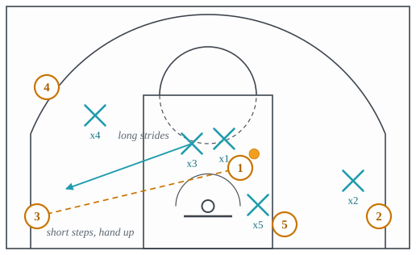

Help and rotations
What the other three defenders do when the first two are beaten.
All families · 14 terms · 14 full, 0 partial, 0 short
Closeout
A defender sprinting from help back to a shooter and slowing down as he arrives, to contest without being driven past.

Why it is run. A shooter who sees a defender arriving out of control does not shoot, he drives, so the sprint back must end in short steps and a high hand or it has traded an open three for an open layup.
What beats it. The stampede, the drive into a closeout that arrives out of control; and a release quick enough that the sprint does not matter.
Dig
A perimeter defender reaching in at a post player or a driver without leaving his man entirely.
![The attacker on the right wing has the ball, and a dashed pass arrow runs from him into the post player on the right edge of the lane, whose defender is on the inside, between him and the basket. The passer's defender stands a step below the passer, still on him, and reaches toward the post along a short arrow labeled dig. The corner attacker's defender stands a few feet above him, toward the wing. The top attacker's defender stays at the nail, and the left-wing attacker's defender stays in help just outside the left side of the lane, far off his man. (Second of 2 frames; the lecture shows the other.)](../figures/stunt-and-dig-2.svg)
Why it is run. A hand down at the post from the perimeter makes the post player protect the ball for the half-second his move needed, without leaving a shooter, because the digger’s body never leaves his man.
What beats it. The post player who passes out of the dig at once to the man it came from; and a shooter who relocates while his defender’s hand is down.
Front the post
Also: fronting
The post defender playing on the passer’s side of the post player rather than behind him, so the entry pass has no angle.
Why it is run. A defender behind a post player concedes the catch and then has to guard him; a defender in front of him concedes nothing, because the pass that beats it has to be lobbed over the top and takes long enough for the weak side to arrive.
What beats it. The lob over the top to a big who seals, and the ball reversal that makes the fronting defender chase from one side of the post to the other.
Help side
The weak-side defenders’ positioning, sagged toward the lane to help on drives while still able to recover to shooters.
![Five attackers spaced around the arc: 3 at the top, 1 with the ball on the right wing, 2 in the right corner, 4 on the left wing and 5 in the left corner. x1 is in front of the ball. x2 is a step off 2 toward the ball. x3 is in the gap just below and right of the top, a step toward the lane. The two weak-side defenders have left their men: x4 stands at the nail, the middle of the free-throw line, labeled nail, and x5 stands in the lane beside the rim, labeled low man. The right half of the floor is labeled strong side and the left half help side.](../figures/help-side.svg)
Why it is run. Two passes away is far enough that a defender can stand in the lane and still recover to his man in the time the pass takes, so the weak side is where a defense keeps its spare bodies.
What beats it. The skip pass, thrown over the sagged defenders to the far wing before they can recover; and shooters good enough that the recovery is too late.
Low man
The weak-side defender nearest the baseline, whose job is to rotate to the rim on a drive or a roll.
Why it is run. Someone has to meet the roller and the driver at the rim, and the weak-side defender nearest the baseline is the one whose man is furthest from the ball and whose leaving costs the least.
What beats it. The kick-out to the weak corner he left; the skip pass over him; the hammer, which screens him on his way back.
Pack line
Also: pack-line defense
A man-to-man scheme in which the on-ball defender pressures and the other four stay inside an imaginary line a step or two inside the arc, giving up the perimeter shot to close the drive.
Why it is run. Four defenders inside a line a step inside the arc make every drive meet two bodies, and the shot they give up is a contested one from a closeout, which the scheme judges the better trade.
What beats it. Shooters who make the contested three; drive-and-kick offense that moves the ball faster than four defenders close out from the line.
Peel switch
A beaten on-ball defender peels off to the nearest open attacker while a helper takes the driver.

Why it is run. Once a defender is beaten and a helper has stepped up, the beaten man is the one player out of the play, so he fills the hole the help left rather than chasing a ball he cannot reach.
What beats it. The kick-out thrown before the peel arrives; a helper who steps up late, so the driver has the layup before anyone has switched.
Scram switch
Also: kick-out switch
An off-ball switch that gets a small defender out of a post mismatch by sending a bigger defender in to take it.
![Half court. 1 has the ball on the right wing, guarded by x5, who stands above him and to his left. The opposing big, 5, posts just outside the right block, labeled post mismatch, and the guard x1 stands above him, clear of him. x4 leaves 4 on the left wing and runs across the lane to the right side of the rim, between 5 and the basket, labeled big comes in beside his arrow. x1 runs the other way, out toward the left wing, labeled small kicks out. The two arrows cross in the lane. x2 stays at the top with 2, and x3 stays near the left corner with 3.](../figures/scram-switch.svg)
Why it is run. A switching defense creates mismatches on purpose and cannot live with a small on a big in the post, so the weak-side big trades in before the entry pass and the mismatch is gone before it is used.
What beats it. The early seal and a quick entry, which get the ball into the post before the scram; the skip pass to the man the big left as he crosses.
Stunt
A fake at the ball from the nail to slow a driver, then recovering.
![The ball-handler dribbles from the right wing toward the middle of the floor, past his defender, who is left behind on the wing. The defender of the attacker at the top of the key stands at the nail, in the middle of the free-throw line, and takes a short step toward the driver along an arrow labeled stunt, then back. The post player stands on the right side of the lane with his defender on the inside, between him and the basket. The left-wing attacker's defender stands off his man in help, just outside the left side of the lane, and the corner attacker's defender stands a few feet above him, toward the wing. (First of 2 frames; the lecture shows the rest.)](../figures/stunt-and-dig-1.svg)
Why it is run. A hard step at the driver from the nail makes him see a body that never comes, and a driver who slows for it has handed the beaten defender the time to recover, at no cost to the stunter’s own man.
What beats it. The driver who does not slow; and the pass to the stunter’s man the moment his step is seen.
Tag
Also: tagged
The low man stepping into the lane to bump the roller, then recovering to his shooter.
![A pick-and-roll from the right slot. The screener stands on the left side of the handler's defender, with the screen bar between them, touching neither, and the handler dribbles left over the top of the screen. The screener rolls down the lane, between the handler's defender and his own defender, who has dropped back just inside the free-throw line. The low man, the defender of the shooter in the left corner, steps into the lane along an arrow labeled tag, which ends a few feet short of the end of the roll arrow. A second arrow, labeled then back, takes him back out toward the corner, so he does not stay with the roller. The other two attackers stand on the left wing and in the right corner, each with a defender.](../figures/tag.svg)
Why it is run. Every coverage leaves the roller unguarded for a beat between the two defenders in the screen, and a bump from the low man buys the big that beat without giving up the corner for longer than one pass takes.
What beats it. The short roll, which gives the roller the ball during the tag; the kick-out if the tag holds too long; the Spain back screen on the tagger.
The hit
A late-clock gamble where a second defender sprints at the ball unprompted to force a rushed decision.
Why it is run. With the shot clock nearly out, a second defender sprinting at the ball forces a decision the handler has no time to make, and the man the hitter left is worth less than the possession the clock is about to end.
What beats it. The pass to the man the hitter left, made before the trap arrives; the handler who sees the clock and the open man at once.
Top-lock
A defender standing above a shooter to deny the pin-down and force him backdoor toward the rim protector.
![Half court. 1 has the ball at the top, with his defender, x1, below him. The shooter, 2, is on the right block. The screener, 5, stands above him just outside the right lane line, with a screen bar below him: the pin-down set for 2. The shooter's defender, x2, stands on the top side of 2, between him and the screen, labeled top-lock. A solid arrow shows the only cut left to 2, backdoor toward the rim, where the big's defender, x5, waits just above the rim; the label under the basket reads backdoor, into the big. 3 on the left wing and 4 in the left corner each have a defender.](../figures/top-lock.svg)
Why it is run. Standing above a shooter and refusing him the path to his pin-down leaves him only the backdoor cut, which is a cut into the rim protector, so the screen the play was built on is never used.
What beats it. The back-cut for a layup when the big is late; the screener who slips out to the arc while the top-locker’s back is turned.
Verticality
A rim protector contesting straight up with arms raised, which is legal contact even inside the restricted area.
Why it is run. A rim protector who jumps straight up inside his own space has committed no foul whatever the shooter does, so the rule lets a big contest at the rim without swatting at the ball.
What beats it. The pump fake that draws the arms down; the shooter who jumps into the big before he is set, so the contact is his to draw.
X-out
Two weak-side defenders swapping men on a kick-out, one down to the corner and one up to the wing, crossing paths.
![A dribble arrow runs from 1 at the top down toward the right side of the rim, and a dashed pass runs from its end out to 3 in the left corner, labeled kick-out. The low man, x3, stands just in front of the rim and a little to its right, where he has come to help on the drive, leaving 3 in the corner. The defender on the left wing, x4, sagging toward the lane and nearer the corner than x3 is, drops down to 3 in the corner, and x3 runs up to 4 on the left wing instead of back to the corner. Their two arrows cross, labeled cross, and each ends in front of the shooter it now guards. x1 stands in the lane at the bottom of the free-throw circle, x5 stands by the rim on the right with 5 in the right dunker spot, and x2 guards 2 in the right corner.](../figures/x-out.svg)
Why it is run. When the low man is under the rim and the ball goes to his corner, the wing defender is closer to the corner than he is, so each closes out to the nearer man and the paths cross.
What beats it. The extra pass, corner to wing, before the low man arrives; the skip pass from the other side that puts the defense a rotation behind.